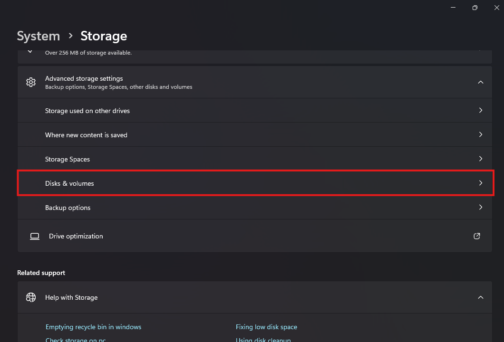
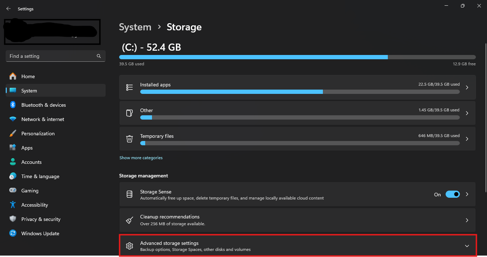
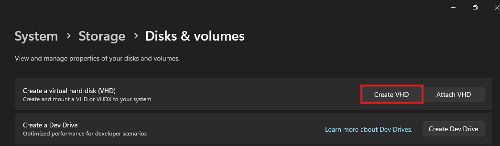
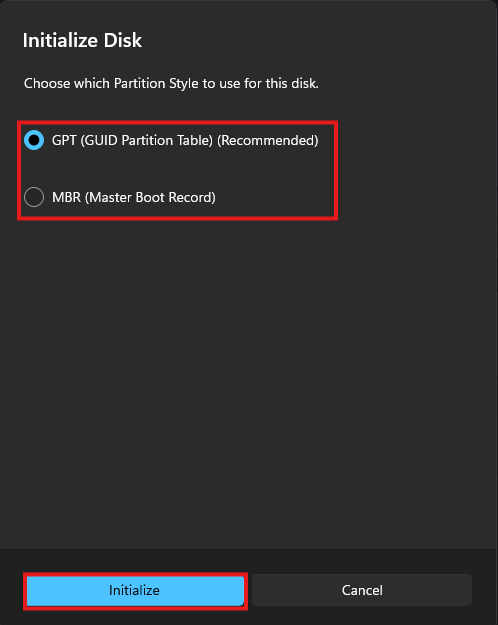
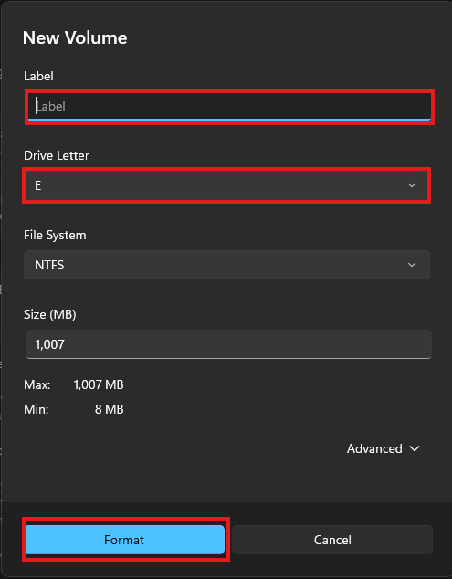
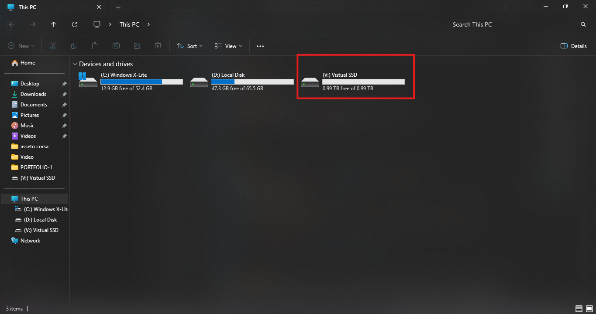

Create a Virtual Hard Disk (VHD/VHDX) in Windows 11
Step‑by‑step tutorial showing how to create, initialize, and format a virtual hard disk in Windows 11 using the built‑in Storage settings— no third‑party tools required.
Step 1 – Open Storage settings
Press Win + I to open Settings. In the left sidebar, click System, then on the right click Storage.
Step 2 – Open Advanced storage settings
On the Storage page, scroll down to the Storage management section and click Advanced storage settings.
Step 3 – Go to Disks & volumes
From the expanded options, choose Disks & volumes to open the disk management view.
Step 4 – Start creating the virtual disk

On the Disks & volumes page, find Create a virtual hard disk (VHD) and click the Create VHD button.
Step 5 – Configure the virtual hard disk
In the Create and attach virtual hard disk window, enter a Virtual hard disk name, optionally change the Location with Browse, and set the Virtual hard disk size. Leave VHDX and Dynamically expanding selected, then click Create.
Step 6 – Initialize the new disk
When the Initialize Disk dialog appears, select GPT (GUID Partition Table) (recommended) and click Initialize. Use MBR only if you need legacy compatibility.
Step 7 – Create and format a new volume
In the New Volume window, set a Label, choose a free Drive Letter, keep the file system as NTFS, and leave the Size as is to use the full disk. Click Format. The new virtual drive now appears in File Explorer.